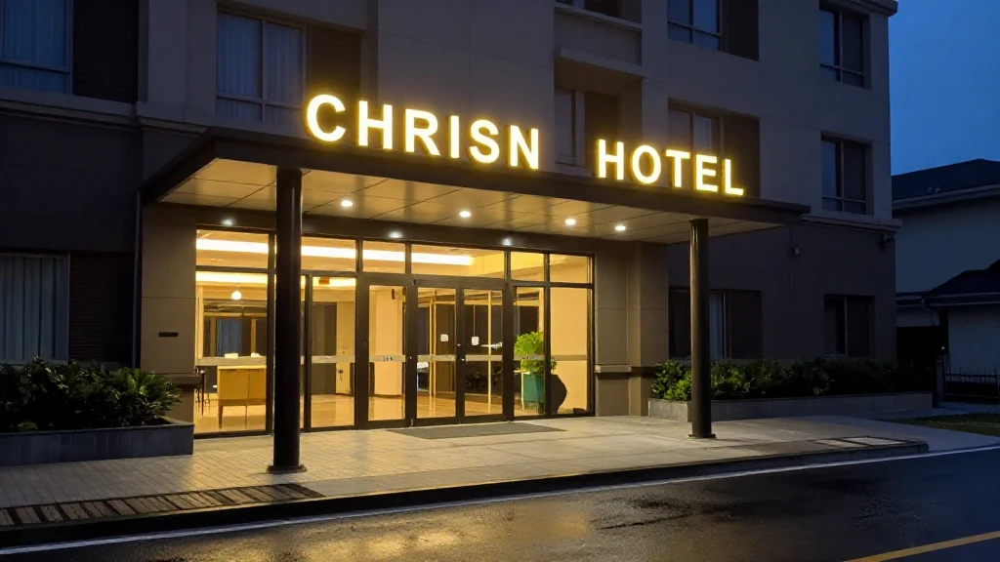
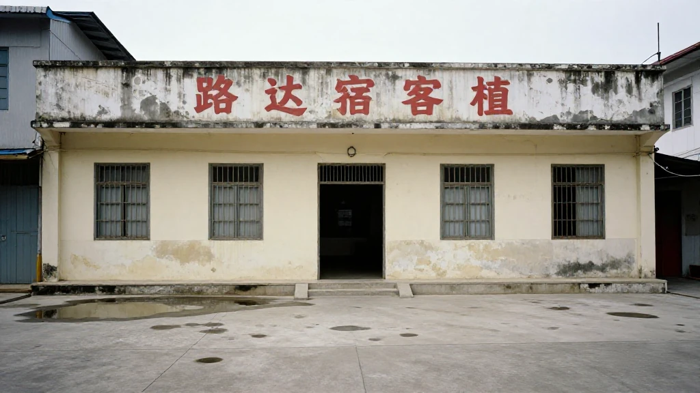
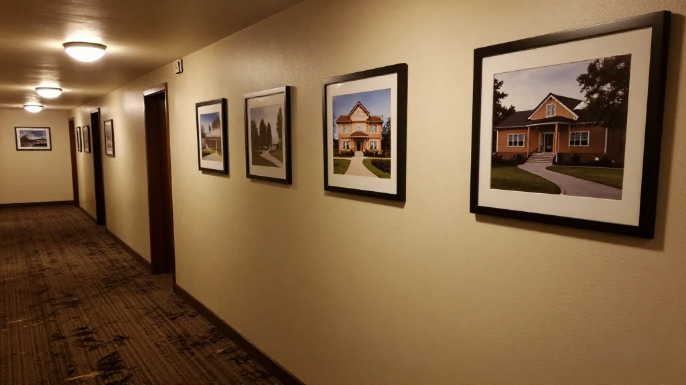

圖片由 AI輔助創作（Z-Image-Turbo）Image by AI (Z-Image-Turbo)
【鄭哥點評】欄目：鄭哥博客點評｜日期：2026-11-05
前排有篇內地爆文，標題好狠：「世上最大嘅騙局就係維也納酒店，它根本就不是靠住宿賺錢的。」我有段時間常住維也納，房價二三百，房間中規中矩，早餐一個粥一碟鹹菜。所以睇到呢句，我第一個反應係：唔靠住宿，咁靠乜？逐條對完公開資料之後，我可以答：呢句話講對咗一半，講錯咗一半。下面全部有出處，唔靠感覺。

圖片由 AI輔助創作（Z-Image-Turbo）Image by AI (Z-Image-Turbo)
一、「三千蚊買起一間賓館」，呢句本身要打折
爆文入面最吸引眼球嘅數字係「三千蚊」。黃德滿 1961 年生於廣東陽江，八十年代末揣住賣毛竹編竹器攢落嘅五千蚊嚟深圳，帶住老家施工隊做土石方同填海工程。1993 年，佢花三千蚊接手一家小賓館，改名維也納——佢係古典音樂愛好者，覺得維也納係音樂之都，呢個名好聽。
但要注意，界面新聞原文用嘅字係「承包」，唔係「買」。三千蚊喺 1993 年大約等於一個普通工人幾個月嘅人工，用嚟承包一間快執笠小賓館嘅經營權同押金，講得通；用嚟買下一棟樓嘅產權，講唔通。網上流傳嘅「三千蚊買下一間賓館」係把「承包」寫成「買」，一字之差，故事就由商業變成神話。留言區第一條就在質疑：「三千蚊能買下一個賓館？這個賓館只有一間房嗎？」——呢個質疑係對嘅。
來源：界面新聞《一家酒店，他賣了十年》，2026-10｜https://www.jiemian.com/article/15184112.html
圖片由 AI輔助創作（Z-Image-Turbo）Image by AI (Z-Image-Turbo)
二、佢唔靠自己嘅樓賺錢，但房費照收
爆文講「唔靠住宿賺錢」，實情係「唔靠自己嘅樓賺錢」。呢個分別好大。錦江 2016 年 4 月 28 日公告，以 17.49 億元收購黃德滿手上維也納酒店 80% 股權；同一份公告披露咗當時嘅家底——截至 2015 年 12 月 31 日，維也納喺超過 20 個省、70 幾個大中城市共擁有酒店 565 家，其中開業 303 家、客房 48,575 間；已簽約未開業 262 家；各類會員合計 1,250 萬人。
關鍵喺 303 家開業店嘅結構：直營 46 家，加盟 257 家。即係每開十間店，有八間半係人家出樓、出錢、出裝修，掛佢個招牌。呢個就係「輕資產」三個字嘅全部內容——唔係唔賺住宿嘅錢，而係唔用自己嘅資產去賺。房費照收，只係佢收嘅唔止房費：品牌費、管理費、中央預訂、供應鏈，每一樣都掛喺「有客人入住」呢個前提上。冇人住，加盟商第二年就唔續約，品牌方一蚊品牌費都收唔到。
來源：新浪財經轉界面新聞《錦江17.5億收購維也納酒店80%股權 成房間最多酒店集團》，2016-04-28｜http://finance.sina.com.cn/chanjing/gsnews/2016-04-28/doc-ifxruaee5031462.shtml
圖片由 AI輔助創作（Z-Image-Turbo）Image by AI (Z-Image-Turbo)
三、十年三筆交易：二十七億唔係喺前台收回嚟
黃德滿喺維也納呢隻牌子身上，前後收咗三次錢。2016 年 4 月，錦江以 17.488 億元買入 80% 股權；2022 年 6 月，再以 2.186 億元買入 10%；2026 年 10 月，最後 10% 作價 8.1 億元（連同深圳市百歲村餐飲 10% 股權，合計約 8.11 億元）。十年加埋，錦江酒店為維也納付出 27.77 億元，換嚟 100% 全資控股，黃德滿徹底離場。
呢度有個好值得記住嘅細節：最後 10% 賣 8.1 億，意味住市場對整間公司嘅隱含估值大約 81 億。一間唔持有物業、淨資產得 4.78 億嘅管理公司，值 81 億——市場買嘅係 3800 幾家門店嘅品牌輸出能力，唔係佢有幾多間房。
所以爆文講「唔靠住宿賺錢」，最準確嘅講法應該係：佢靠住宿養住個品牌，靠品牌收加盟商嘅錢，最後靠股權一次性收割。三層，唔係一層。
來源：新浪財經轉長江商報《錦江酒店半年淨增272家至1.44萬家 10年耗資27.77億拿下維也納酒店》，2026-10-08｜https://finance.sina.com.cn/roll/2026-10-08/doc-iniunezp4472046.shtml

圖片由 AI輔助創作（Z-Image-Turbo）Image by AI (Z-Image-Turbo)
四、財務骨架：3800 家店，淨資產得四億七
同一份公告披露嘅財務數，比爆文嘅修辭有意思得多。截至 2026 年 6 月 30 日，維也納酒店資產總額 38.44 億元，負債總額 33.66 億元，淨資產只有 4.78 億元，資產負債率大約 87.6%。
賺錢能力唔差：2025 年營業收入 34.85 億元、淨利潤 5.45 億元；2026 年上半年營業收入 16.87 億元、淨利潤 2.3 億元。問題係，一間管理住 3800 幾家門店、年賺五億幾嘅酒店管理公司，帳面淨資產唔夠五億，負債卻有 33 億。
呢個就係輕資產模式嘅另一面：重資產推咗去加盟商度，管理責任同負債留喺自己身上。加盟商出樓、出裝修、出押金，品牌方出招牌、出系統、出管理——順風嘅時候兩邊都賺，逆風嘅時候，砸嘅係自己個名。
來源：界面新聞《一家酒店，他賣了十年》，2026-10｜https://www.jiemian.com/article/15184112.html
圖片由 AI輔助創作（Z-Image-Turbo）Image by AI (Z-Image-Turbo)
五、鄭哥點評
先講結論：呢個唔係騙局，係一場漫長嘅股權遊戲。爆文嘅錯，在於把「唔靠自己的樓賺錢」偷換成「唔靠住宿賺錢」——前者係財務結構，後者係否認常識。三千八百家店、年營收三十四億，冇人入住邊有呢個數。
真正值得學嘅，係佢由頭到尾都清楚自己喺賣乜：對住客賣「二星價錢、五星感覺」嘅確定性，對住加盟商賣「有人幫你驗過嘅一套標準」，對住資本市場賣「三千八百家店嘅品牌輸出能力」。同一個招牌，三種價錢。
但輕資產唔等於輕風險。淨資產四億七、負債三十三億六，呢個結構順風時係槓桿，逆風時係繩索。加盟商保得住個招牌，保唔住間舖；品牌方保得住個招牌，保唔住個名。
所以下次再見到「某某根本唔靠主業賺錢」呢類標題，先問一句：咁主業係邊個幫佢養住嘅？答案通常就係被標題省略嘅那批人。
圖片由 AI輔助創作（Z-Image-Turbo）Image by AI (Z-Image-Turbo)
\[Zheng Ge's Take\] Column: Zheng Ge's blog commentary | Date: 2026-11-05
A viral post from mainland China recently carried a brutal headline: 'The biggest scam in the world is Vienna Hotels - it does not make money from accommodation at all.' I have stayed in Vienna hotels for stretches at a time: rooms around two to three hundred yuan, unremarkable, breakfast a bowl of congee and a dish of pickles. So my first reaction to that line was: if not accommodation, then what? After checking the public record line by line, I can answer - the claim is half right and half wrong. Everything below has a source; none of it is a hunch.
圖片由 AI輔助創作（Z-Image-Turbo）Image by AI (Z-Image-Turbo)
1. 'Three thousand yuan bought a hotel' - that line needs a discount
The number that grabs people in that viral post is 'three thousand yuan.' Huang Deman was born in 1961 in Yangjiang, Guangdong. In the late 1980s he came to Shenzhen with five thousand yuan saved from selling and weaving bamboo, and led a crew from his hometown doing earthworks and land reclamation. In 1993 he took over a small guesthouse for three thousand yuan and renamed it Vienna - he was a classical music fan, thought Vienna the city of music, and liked the sound of it.
Note the verb, though. The original Jiemian News report uses 'contracted' (承包), not 'bought.' Three thousand yuan in 1993 was roughly several months of an ordinary worker's wage: plausible as the operating rights and deposit on a failing guesthouse, impossible as the price of a building. The version circulating online turns 'contracted' into 'bought,' and one word is all it takes for a business story to become a myth. The first comment under that viral post already asks: 'Three thousand yuan bought a hotel? Did the hotel have one room?' - and that reader is right.
Source: 界面新聞《一家酒店，他賣了十年》，2026-10 | https://www.jiemian.com/article/15184112.html
圖片由 AI輔助創作（Z-Image-Turbo）Image by AI (Z-Image-Turbo)
2. It does not earn from its own buildings - but it still charges for rooms
The viral post says Vienna does not make money from accommodation. The truth is that it does not make money from its own buildings - and that is a very different sentence. On 28 April 2016 Jilin Hotel Group announced it would buy 80% of Vienna Hotels from Huang Deman for 1.749 billion yuan, and the same filing laid out the estate: as of 31 December 2015 the group held 565 hotels across more than 20 provinces and 70-plus cities, of which 303 were open with 48,575 rooms, another 262 signed but not yet open, and 12.5 million members in total.
The structure of those 303 open hotels is the whole story: 46 company-owned, 257 franchised. Eight and a half out of every ten properties were built, funded and fitted out by someone else, flying its sign. That is the entire content of the phrase 'asset-light' - not that room revenue is irrelevant, but that the assets are not its own. Room money still comes in; it is simply not the only thing collected. Brand fees, management fees, central reservations, supply chain: every one of them hangs on the premise that guests actually check in. No guests, no renewal next year, and not one yuan of brand fee.
Source: 新浪財經轉界面新聞《錦江17.5億收購維也納酒店80%股權 成房間最多酒店集團》，2016-04-28 | http://finance.sina.com.cn/chanjing/gsnews/2016-04-28/doc-ifxruaee5031462.shtml
圖片由 AI輔助創作（Z-Image-Turbo）Image by AI (Z-Image-Turbo)
3. Three deals in ten years: 2.7 billion was not collected at the front desk
Huang Deman was paid three times for the same brand. In April 2016 Jilin Hotel Group bought 80% for 1.7488 billion yuan; in June 2022 it bought another 10% for 218.6 million; in October 2026 the final 10% was priced at 810 million (about 811 million together with a 10% stake in Shenzhen Baisuicun Catering). Over ten years Jilin paid 2.777 billion yuan for Vienna and ended up with 100% control; Huang exited entirely.
One detail is worth remembering: 810 million for the last 10% implies an enterprise valuation of roughly 8.1 billion yuan. A management company that owns no property and holds net assets of 478 million is worth 8.1 billion - because what the market bought was the brand's ability to put 3,800-plus properties under one sign, not the rooms it owns.
So the accurate version of that viral claim is: accommodation feeds the brand, the brand charges the franchisees, and equity delivers the one-off harvest. Three layers, not one.
Source: 新浪財經轉長江商報《錦江酒店半年淨增272家至1.44萬家 10年耗資27.77億拿下維也納酒店》，2026-10-08 | https://finance.sina.com.cn/roll/2026-10-08/doc-iniunezp4472046.shtml
圖片由 AI輔助創作（Z-Image-Turbo）Image by AI (Z-Image-Turbo)
4. The balance sheet: 3,800 hotels, 478 million in net assets
The numbers in the same announcement are far more interesting than the viral rhetoric. As of 30 June 2026, Vienna Hotels reported total assets of 3.844 billion yuan, total liabilities of 3.366 billion, and net assets of just 478 million - a debt-to-asset ratio of about 87.6%.
Profitability is not the problem: 2025 revenue was 3.485 billion yuan with net profit of 545 million; the first half of 2026 brought 1.687 billion in revenue and 230 million in profit. The oddity is that a hotel management company running more than 3,800 properties and earning half a billion a year holds under 500 million in book net assets while carrying 3.37 billion in debt.
That is the other face of asset-light: the heavy assets are pushed onto franchisees, while management duty and liabilities stay at home. Franchisees supply the building, the fit-out and the deposit; the brand supplies the sign, the system, the management. In fair weather both sides earn. In foul weather, what gets damaged is your own name.
Source: 界面新聞《一家酒店，他賣了十年》，2026-10 | https://www.jiemian.com/article/15184112.html
圖片由 AI輔助創作（Z-Image-Turbo）Image by AI (Z-Image-Turbo)
5. Zheng Ge's Take
Conclusion first: this is not a scam, it is a long equity game. What the viral post gets wrong is swapping 'it does not earn from its own buildings' for 'it does not earn from accommodation.' The first is a capital structure; the second denies arithmetic. Three thousand eight hundred hotels and 3.4 billion a year in revenue do not exist without guests.
What is genuinely worth studying is that Vienna knew at every stage exactly what it was selling: to guests, the certainty of 'five-star feel at two-star prices'; to franchisees, a standard someone else had already tested; to the capital market, a brand's ability to put 3,800 properties under one sign. One sign, three price tags.
But asset-light is not risk-light. Net assets of 478 million against 3.37 billion in liabilities: in fair weather that structure is a lever, in foul weather it is a rope. A franchisee keeps the sign but not the shop; a brand keeps the sign but not the name.
So the next time a headline says some company 'does not really make money from its core business,' ask first: who is keeping that core business alive for them? The answer is usually the people the headline left out.